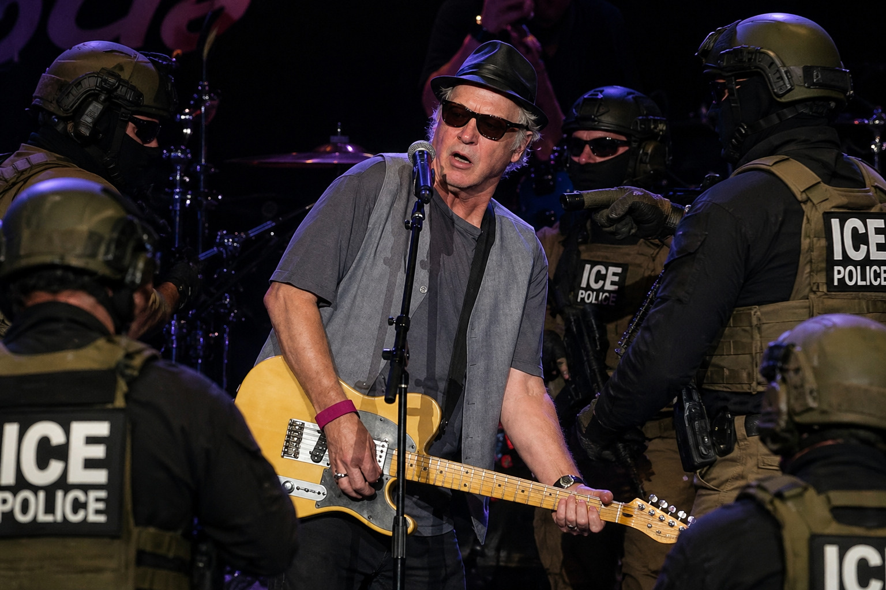

Tommy Two-Tone Renditioned to GitMo After Decades-Long “Numeric Threat Campaign”
Officials warn repeated use of “867-5309” may indicate embedded signaling protocol targeting domestic infrastructure.

GUANTÁNAMO BAY, CUBA — Federal authorities confirmed Tuesday that Tommy Two-Tone, frontman of Tommy Tutone, has been renditioned to a secure detention facility following what officials describe as a “sustained numeric signaling operation” spanning more than four decades.
The investigation centers on the artist’s repeated live and recorded performances of the sequence “867-5309,” which intelligence analysts now classify as “high-frequency numeric dissemination with unknown downstream activation potential.”
“He didn’t vary it. Not once,” said one senior official. “That level of consistency suggests either artistic commitment or operational discipline. We are proceeding as if it’s the second one.”
According to internal reports, the number was flagged after analysts determined it could be “reconfigured into a loose geographic reference” near properties once visited by Donald Trump, prompting escalation to joint counterterror review.
Two-Tone has reportedly remained cooperative during questioning, though officials expressed frustration with his insistence that the number “just sounded good” and that “Jenny is not a real person.”
“We’ve seen this before,” an interrogator said. “Fictional identities. Plausible deniability. Catchy hooks.”
In response to the case, lawmakers introduced the Numeric Expression Accountability Act, requiring all musicians to submit number-based lyrics for pre-clearance to prevent what officials call “melodic radicalization pathways.”
Outside the facility, reaction has been mixed. Some fans expressed disbelief, while others admitted the repetition now felt “aggressive in hindsight.”
“Why that number?” one listener asked. “Why not 555 like a normal person?”
Officials confirmed the number has since been reassigned to a secure federal line. Citizens who have previously dialed it are encouraged to report themselves “out of an abundance of caution.”
At press time, call volumes remain unusually high.